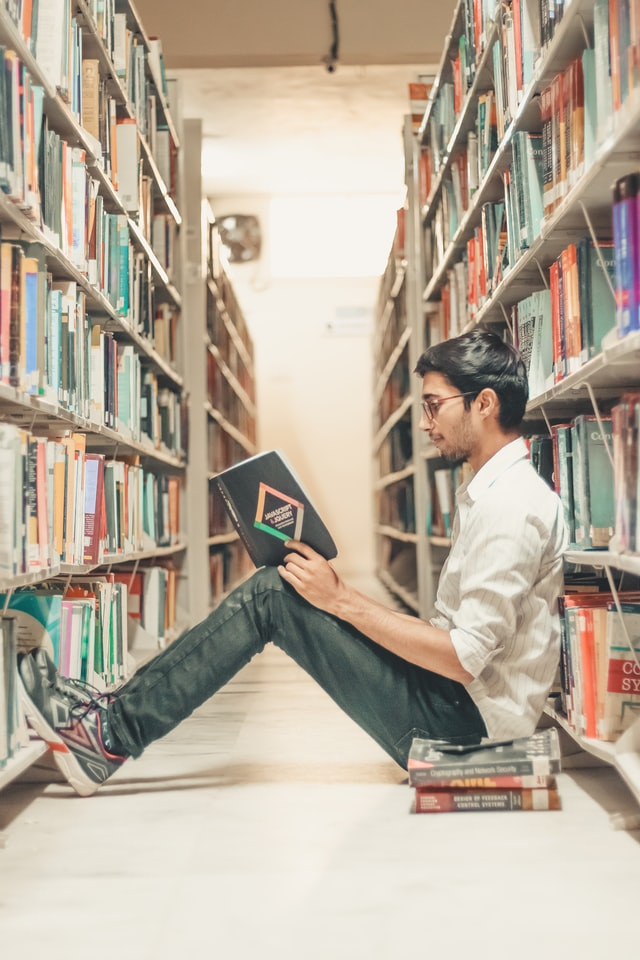
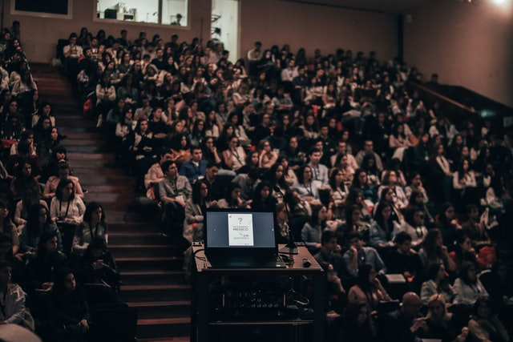

More Freedom = More Responsibility
There are certain challenges in the transition from being a pupil
to becoming a student. Some of them are related to more freedom
and responsibility.
One of the biggest changes is the amount
of mandatory classes. In high school the pupils often have
mandatory classes from 08:00 until 15:30 everyday. Whereas students
have some weekly or daily classes that they can choose to attend to
or not. This freedom can be difficult for new students to
handle, and the responsibility can be difficult to manage.
The lack of homework that pupils are used to, can also
be a difficulty in the transition to higher-education.
Homework are great for
creating a steady and evenly workload. The lack of homework
in combination with poor self discipline can cause that the
student waits until the last minute to get their work done.
For some students this method works, but it could lead to a
feeling of stress and loss of control, and the fear of not
getting through the syllabus in time for the exam.

Another challenge in the transition from being a pupil to a student,
is the difference in how the student is graded. The pupils usually
have several tests, a mid-year test and possibly a final exam. The
grading for students is often determined by the school, faculty and
the study they attend. In Norway it’s not unusual for the student to
have 1-3 mandatory assignments and then a final exam in one course
throughout the semester. Usually the mandatory assignments do not
count towards the final grade, they just need to be passed in order to take
the final exam. And then the final exam will determine the students grade.

A Social Challenge
A last challenge is the social interactions with other pupils/students
and getting friends at school. In high school most people get friends
because they are in the same class, or were friends before they startet
at high school. Because of the everyday «small» classes, with the same
group and the high levels of interactions, pupils have good conditions for
making friends.
As a student it could be more challenging to make
friends because it´s usually not a «classroom» environment. Instead it
could be a lecture hall with 100-400 students who all sits quiet in
their chairs and listens to a professor speaking, taking notes.
Therefore the students need to put in a lot more effort into the process
of getting friends than the pupils. However the universities and other
higher educational institutions have a buddy-week, where the students are put togheter
in groups and does different activities togheter for a week or two. This is a
great way to get to know your fellow students and make friends.
Also the educational institutions often offer a broad range of
activities or social groups that the student can be a member of.
Overall the transition from being a pupil to a student is a big step,
and comes with different challenges. The students has a lot more responsibility
regarding attending classes, managing their workload and getting friends.
These are some of the challenges that the group members have experienced
in their transition from being a pupil to a student.